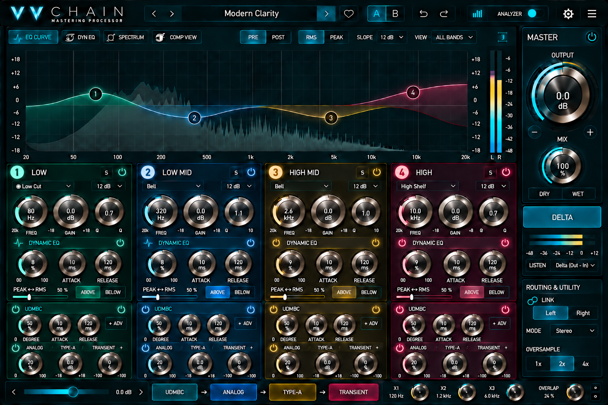

VVChain
Windows VST3 · v1.0.140
Download Windows VST3
Public distribution only. Source code and DSP implementation are not published here.Windows VST3 · v1.0.140
Download Windows VST3
Public distribution only. Source code and DSP implementation are not published here.